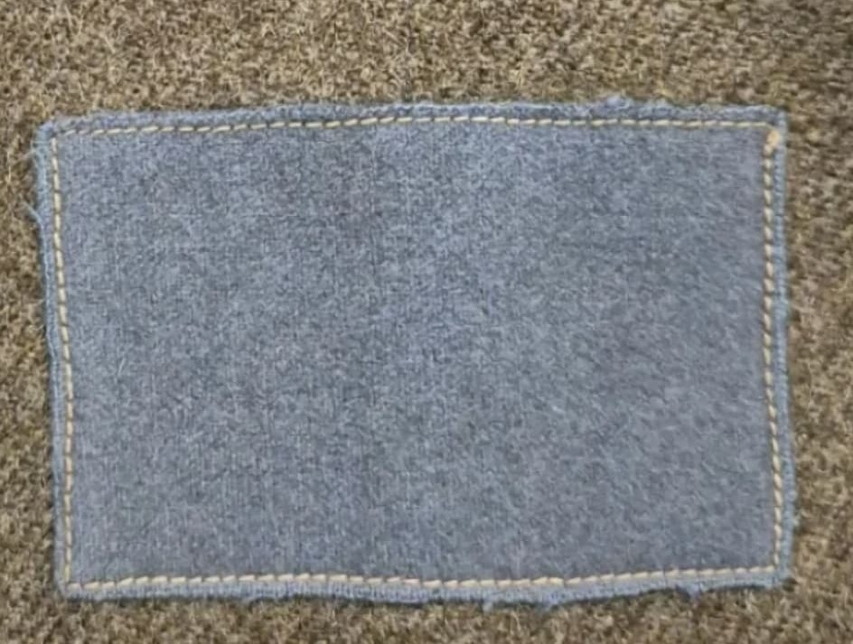

Introduction
La 3rd Canadian Infantry Division (3e division d'infanterie canadienne) est l'une des formations d'assaut les plus emblématiques du Débarquement de Normandie.
Désignée pour mener le débarquement sur le secteur de **Juno Beach** le 6 juin 1944, cette division s'est enfoncée plus profondément à l'intérieur des terres que toute autre unité alliée au soir du D-Day. Surnommée la « Waterloo Division » par Montgomery pour son professionnalisme, elle a joué un rôle déterminant dans la campagne d'Europe du Nord-Ouest.
Origine et insigne
Mise sur pied en mai 1940 au Canada, la division rassemble des régiments anglophones et francophones d'élite (dont Le Régiment de la Chaudière, The Queen's Own Rifles of Canada, The Royal Winnipeg Rifles et The North Shore New Brunswick Regiment).
Son insigne d'épaule distinctif se compose d'un rectangle bleu ciel (*French Gray Patch* ou *Sky Blue Patch*), perpétuant le patrimoine héraldique de la 3e division canadienne de la Grande Guerre.

6 juin 1944 : Le choc de Juno Beach et l'enfer de Caen
Dans la matinée du **6 juin 1944**, sous les ordres du major-général **Rod Keller**, la 3rd Canadian Division débarque à Bernières-sur-Mer, Courseulles-sur-Mer et Saint-Aubin-sur-Mer. Face à des fortifications tenaces et un sous-sol miné, les Canadiens percent les défenses allemandes au prix de lourdes pertes.
Durant les semaines suivantes, la division fait face aux violentes contre-attaques des 12. SS-Panzer-Division et 21. Panzer-Division. Elle combat sans relâche dans le secteur de l'aéroport de Carpiquet (Opération Windsor) et participe activement à la libération définitive de Caen puis à la fermeture de la poche de Falaise.

1944 - 1945 : Des ports de la Manche à la Libération
Après la percée de Normandie, la 3rd Division reçoit la lourde tâche d'assiéger et de capturer les puissantes forteresses portuaires de la Manche (Boulogne, Calais) lors de l'opération *Undergo*.
À l'automne 1944, elle prend une part capitale dans la terrible **bataille de l'Escaut**, traversant en véhicules amphibies DD/Terrapin les polders inondés de la poche de Breskens pour ouvrir l'accès au port d'Anvers. Elle termine son héroïque épopée au printemps 1945 en libérant le nord des Pays-Bas.
Voir aussi
Page du Musée HOP WW2 – Section Unités & Divisions